A dimensionless threshold to define whether the flow is turbulent or laminar.
Conceptually, \(Re\) is defined as the ratio between inertial and viscous forces (inertial forces are associated with the mean motion of the fluid and the viscous forces are associated with frictional shear stress.)
The threshold for the onset of turbulence is about 2000. I.e., turbulence is associated with large Reynolds numbers. Most atmospheric flows are turbulent (Re >> 2000) as \(\upsilon\) is on the order of 10^{-5} m^2 s^{-1}, d is 100s of meters and u is on the order of 0.1 to 10 m s^{-1}.
In other words, the characteristic length scale of the flow is much larger than the thickness of the laminar boundary layer
\(Re\) for wind blowing 0.25 m s^{-1} over a 10 cm leaf is 250.
\(Re_{crit} \approx 10^6\) in real atmospheric flows, \(Re_{crit} \approx 2 * 10^4\) in engineering flows.
But Re is of limited value in real atmospheric flows because of role of buoyancy (that increases or decreases the amount of turbulence).
Production of turbulence
Turbulence in the ABL is a ‘mixture’ of mechanical (forced) and thermal (free) convection.
Mechanical turbulence in the ABL is caused by instabilities arising from strong mean velocity gradients, which in turn are caused by surface skin or form drag (obstacles) or shear flow.
Skin drag
In micrometeorology and climatology we encounter fully adjusted wall-bounded flows with the surface as the lower boundary condition.
A strong velocity gradient is caused due to the no-slip condition at solid boundaries - skin drag. This velocity gradient becomes unstable when reaching higher Re.
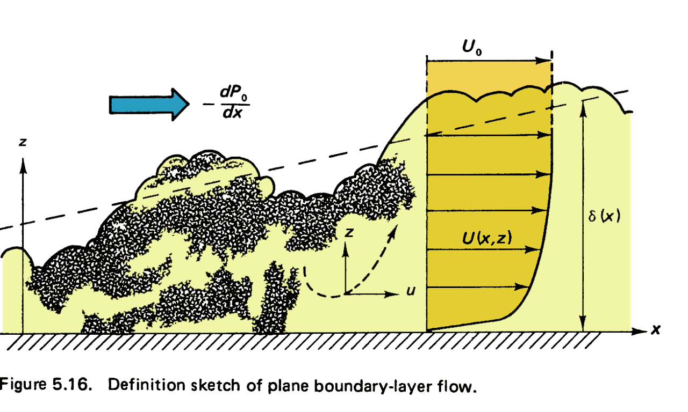
H. Tennekes and J. L. Lumley (1972): A first course in turbulence. Massachusetts Institute of Technology.
Form drag
Obstacles in the flow (trees, houses, etc.) cause separation and pressure differences giving eddies in the wake.
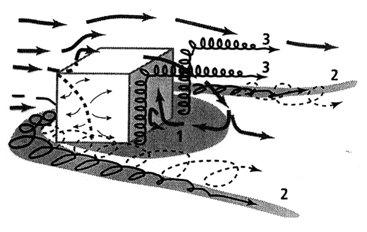
Flow and turbulence around a cube
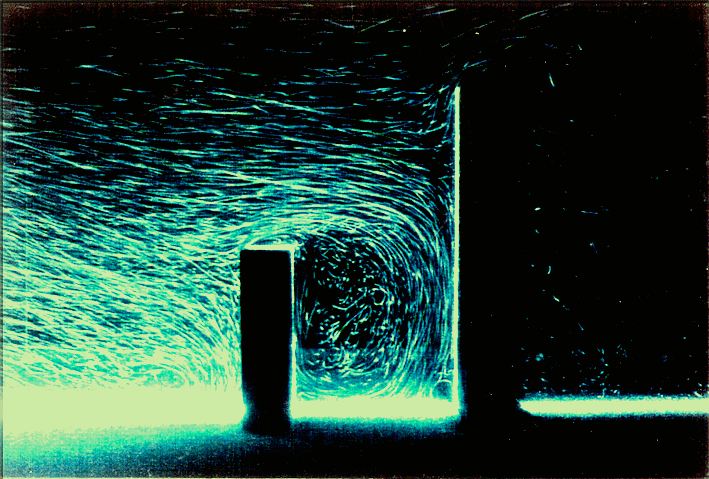
Flow around building models placed in wind tunnel visualized using Laser Light Sheet (Institute of Industrial Science, University of Tokyo)
Mechanical (forced) convection caused by an obstacle
Airplanes wings work by exploiting pressure differentials due to flow separation to produce lift!
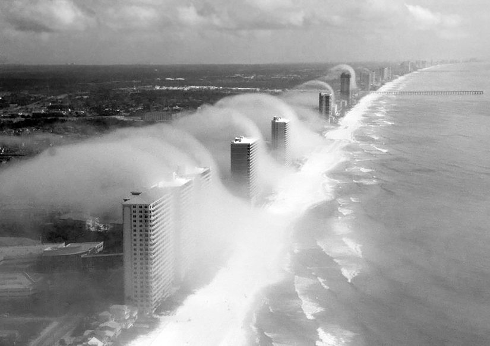
Clouds over high-rise buildings in Panama City Beach, Florida, USA. Wind is from the right (ocean). (Photo courtesy of J. R. Hott, Panhandle Helicopters).
Simulation of turbulence above a city block using a numerical model (Courtesy of M. Parlange / M. Giometto, UBC)
Mechanical (forced) convection due to shear
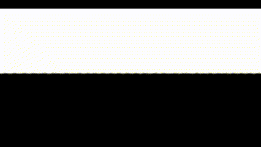
Direct numerical simulation of turbulence in a Kelvin Helmholtz instability
Kelvin Helmholtz waves in BC
These can produce interesting cloud features in areas of complex terrain.
They even make it on to local news, like this example from November 2023
Mechanical (forced) convection
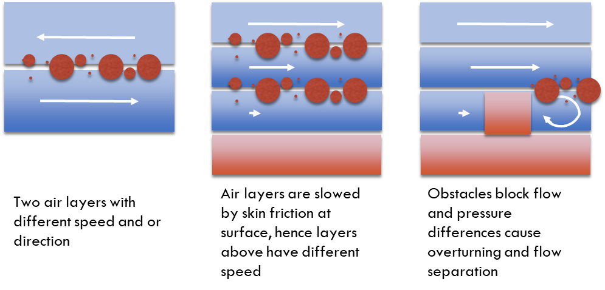
We can have three different scenarios that create turbulence mechanically
Thermal (free) convection
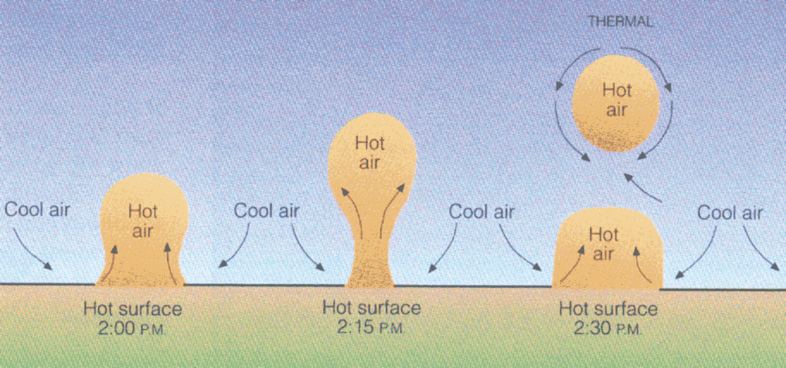
Thermal (free) convection
Surface heating → density differences in air → convective exchange due to buoyancy.
Thermal turbulence production requires continual input of heat which is converted to turbulent kinetic energy.
Size of eddies scales are restricted by the height of the atmospheric boundary layer (ABL)
The height of the ABL depends on the profile of potential temperature which in turn is controlled by turbulent mixing
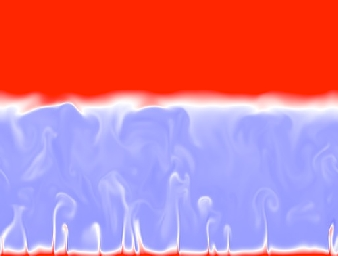
Snapshot of the temperature field in a direct numerical simulation of convection in the ABL, Figure by Peter Sullivan (NCAR/MMM) and H. Jonker (Delft University, Netherlands)
Thermally produced turbulence - free convection
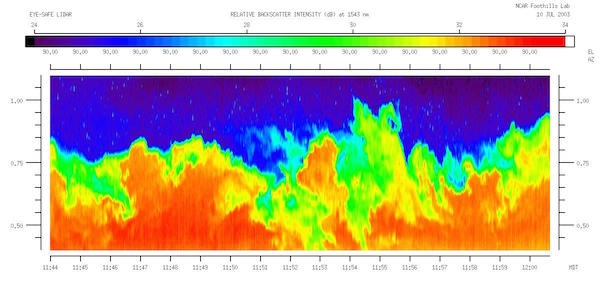
Lidar image is a vertical slice through the atmospheric boundary layer, where polluted airis being carried upward from the surface by thermals Source
Measuring thermal turbulence on an aircraft
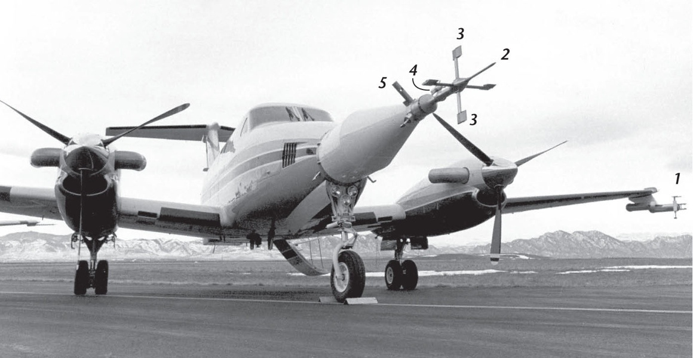
Thermal (free) convection
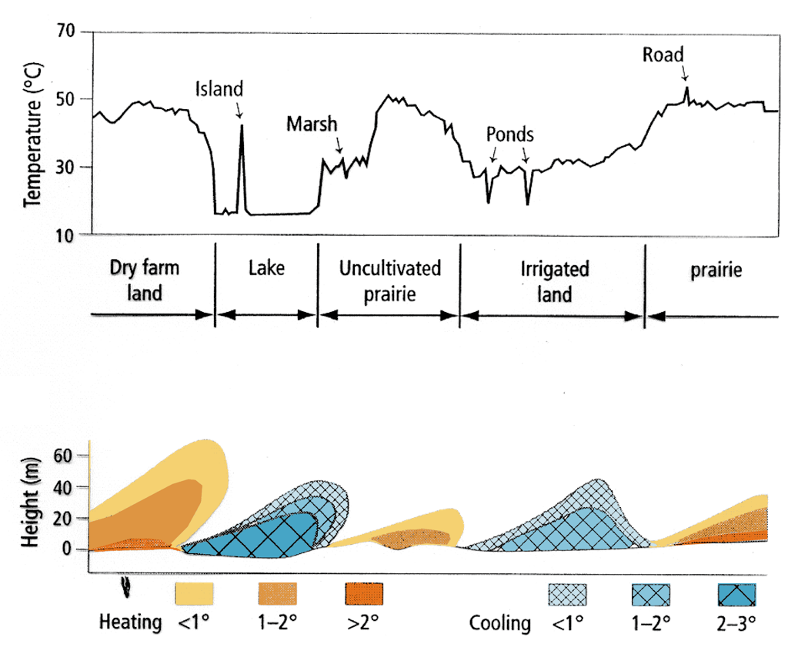
Variations across the landscape
Mechanical vs. thermal turbulence
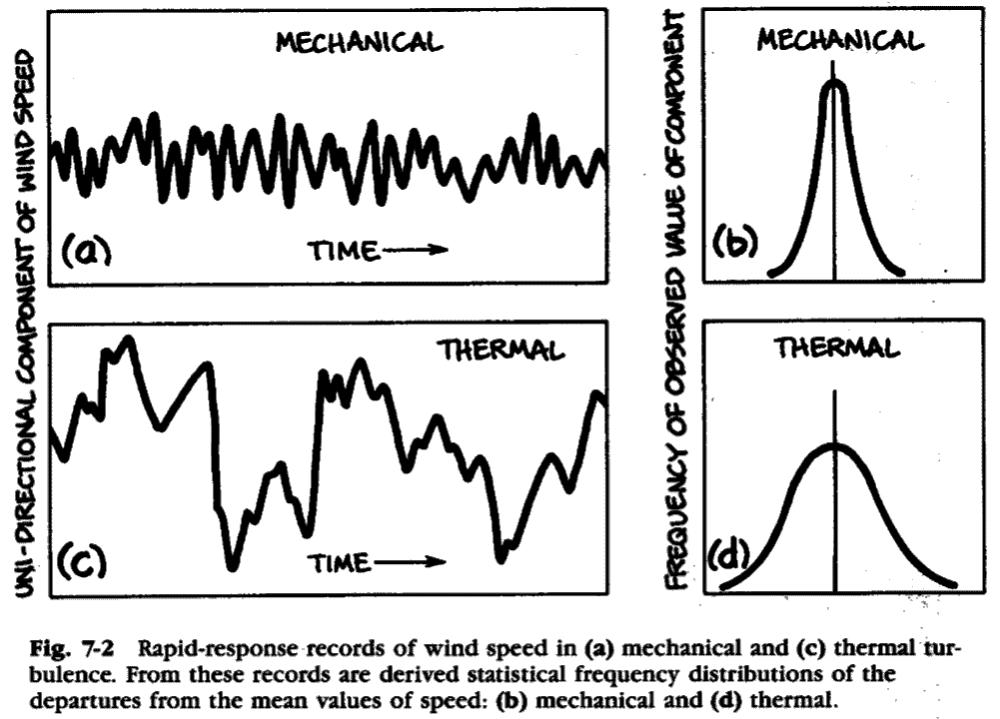
W. P. Lowry, P. P. Lowry (1989)
Thermal convection and suppression
Unstable: Mechanical (forced) and thermal (free) convection.
Neutral: Only mechanical (forced) convection.
Stable: Mechanical (forced) convection and thermal suppression.
Conservation of energy - The Turbulent Kinetic Energy (TKE) budget
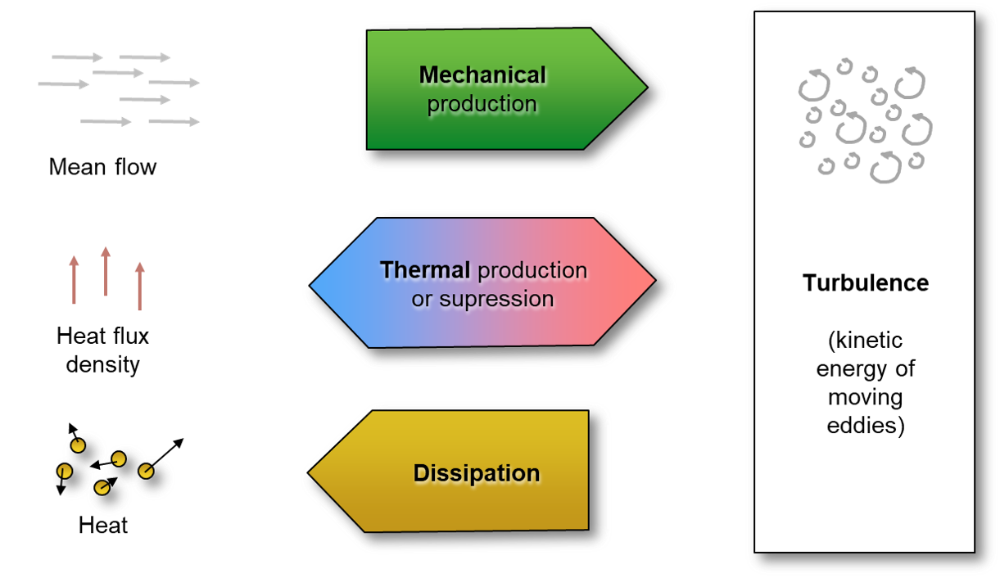
Take home points
Turbulence in the ABL is a ‘mixture’ of mechanical (forced) and thermal (free) convection.
Mechanical turbulence in the ABL is caused by instabilities arising from strong mean velocity gradients, which in turn are caused by surface skin or form drag (obstacles) or shear flow.
Thermal turbulence is caused by mean velocity gradients between warm air plumes rising up in the ABL which in turn are caused by differential surface heating.
Mechanical turbulence production requires continual supply of kinetic energy (mean wind) while thermal turbulence requires continual supply of a sensible heat flux (surface heating).